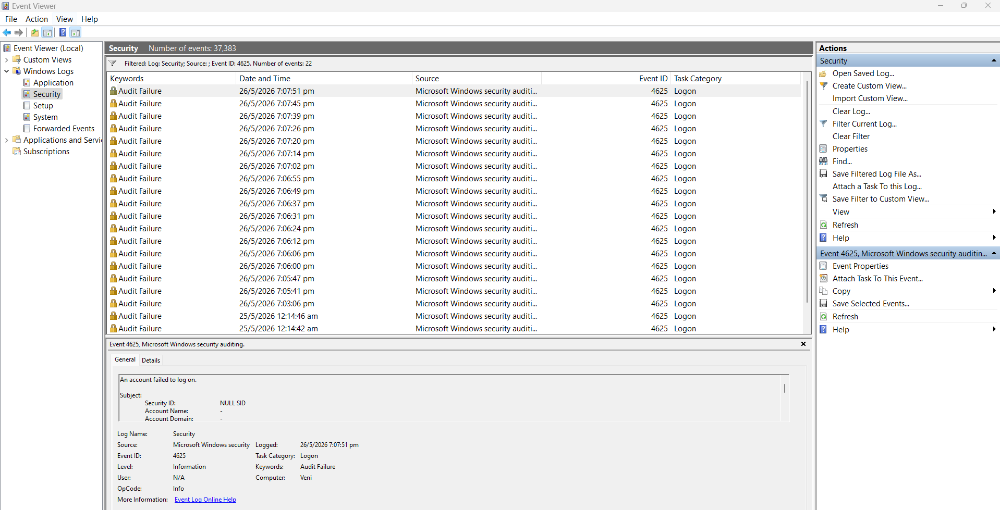
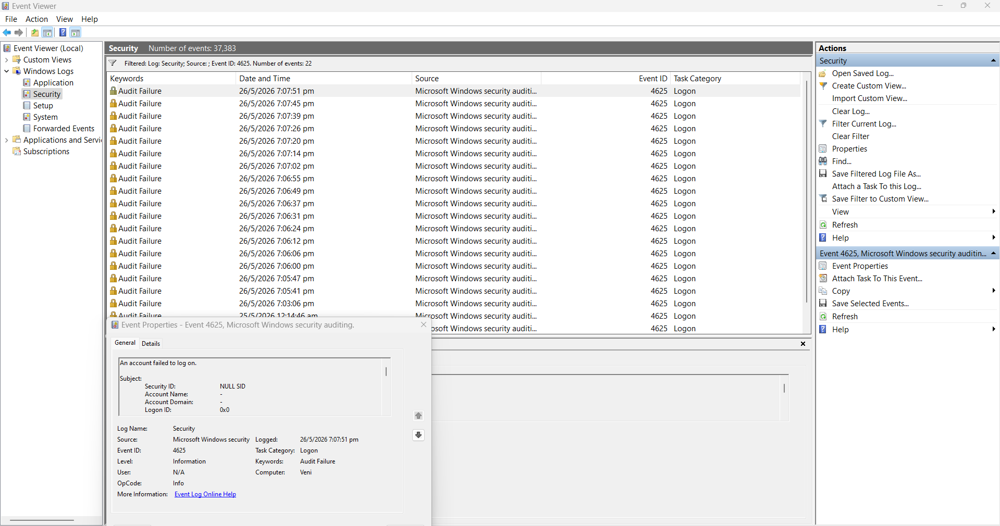
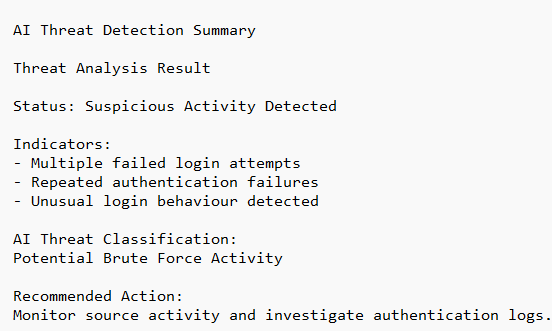
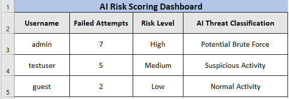

Project 07 / AI-Based Threat Detection
Simulated AI-assisted threat detection using Windows Security Logs.
A cybersecurity portfolio project focused on suspicious authentication analysis, anomaly detection, AI-assisted threat classification, and security monitoring using Windows Event Logs.
Project Overview
AI-assisted suspicious authentication detection and anomaly analysis.
An AI-based threat detection project was developed to simulate intelligent identification of suspicious authentication activity within Windows Security Logs. The project focused on recognising abnormal login behaviour, analysing repeated authentication failures, and demonstrating how AI concepts can support cybersecurity monitoring and threat detection.
Collect Windows Security Logs
Analyse failed login events
Identify suspicious patterns
Apply AI threat classification
Simulate anomaly detection
Generate risk scoring dashboard
Tools Used
Technologies and tools used during AI threat analysis.
Security Tools
Windows Event Viewer
Windows Security Logs
Excel Risk Dashboard
AI Detection Components
Failed Login Analysis
Threat Classification
Anomaly Detection Simulation
Threat Analysis
AI-assisted suspicious activity monitoring and anomaly detection.
Failed authentication events were analysed to identify abnormal login behaviour and suspicious activity patterns commonly associated with brute-force attacks and malicious authentication attempts.
Threat Indicators Analysed: - Multiple failed login attempts - Repeated authentication failures - Suspicious login behaviour - Abnormal authentication patterns AI Threat Classification: Potential Brute Force Activity Security Monitoring Focus: Authentication anomaly detection
Evidence Gallery
Screenshots and investigation evidence collected during AI-assisted threat analysis.




Threat Detection Findings
Suspicious authentication activity successfully identified.
Authentication Monitoring
Analysed Windows Security Logs to identify repeated failed authentication attempts.
AI Threat Classification
Simulated AI-assisted threat classification based on suspicious login behaviour and authentication anomalies.
Anomaly Detection
Identified abnormal authentication patterns associated with potential brute-force activity.
Threat Detection Results
AI-assisted threat detection simulation completed successfully.
Threat Analysis Component
Outcome
Authentication Analysis
Multiple failed logins identified successfully
Threat Classification
Suspicious authentication activity detected
Anomaly Detection
Potential brute-force behaviour identified
Project Status
AI threat detection simulation completed
Skills Demonstrated
AI-Assisted Threat Detection
Simulated intelligent threat detection using authentication log analysis.
Security Monitoring
Monitored suspicious authentication behaviour using Windows Security Logs.
Anomaly Detection
Analysed abnormal authentication patterns and suspicious activity indicators.
Threat Classification
Applied simulated AI risk scoring and threat classification concepts.